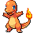
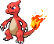
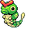

-
Bulbasaur #001

- Grama
- Veneno
Uma semente estranha foi plantada em suas costas ao nascer. A planta brota e cresce com este Pokémon.
-
Ivysaur #002

- Grama
- Veneno
Quando o bulbo nas costas cresce, parece perder a capacidade de ficar de pé nas patas traseiras.
-
Venusaur #003

- Grama
- Veneno
Sua planta floresce quando está absorvendo energia solar. Ele permanece em movimento para buscar a luz do sol.
-
Charmander #004
- Fogo
Desde que nasce, uma chama arde na ponta de sua cauda. Sua vida terminaria se a chama se apagasse.
-
Charmeleon #005
- Fogo
Quando balança sua cauda em chamas, eleva a temperatura do ar a níveis insuportavelmente altos.
-
Charizard #006

- Fogo
- Voador
Ele cospe fogo que é quente o suficiente para derreter pedras. Pode causar incêndios florestais soprando chamas.
-
Squirtle #007

- Água
Após o nascimento, suas costas incham e endurecem em uma concha. Ele pulveriza poderosamente espuma de sua boca.
-
Wartotle #008

- Água
Muitas vezes se esconde na água para perseguir presas incautos. Para nadar rápido, move as orelhas para manter o equilíbrio.
-
Blastoise #009

- Água
Os jatos de água pressurizada no casco deste POKéMON brutal são usados para tackles de alta velocidade.
-
Caterpie #010
- Inseto
É coberto com uma pele verde. Quando cresce, muda de pele, cobre-se de seda e torna-se um casulo.
-
Metapod #011

- Inseto
Embora envolto em uma casca resistente, o corpo por dentro é macio. Não pode resistir a um ataque duro.
-
Butterfree #012

- Inseto
- Voador
As asas são protegidas por poeira repelente de chuva. Como resultado, este POKéMON pode voar mesmo na chuva.